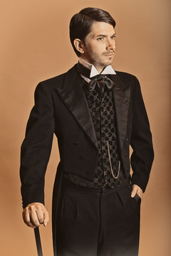

Name : Charles Robinson
Age :14 years old
Personality : Spoiled child, conceited, puts the others down
House: Horned Serpent
Goal: fighting Adam at Ilvermorny
Charles Robinson is a young 14 year-old boy. He was born in 1836 in a very wealthy family with his parents. Since he was a kid, he always had what he desires, and has never been satisfied. He has always been very scorny towards the slave family who work for him, especially Adam, who is the same age as him.

Name: Sir Henry Robinson
Age: 43 years
Personality: Cruel, merciless, heartless
House: Horned Serpent
Goal: Prevent Adam from finding his mother
His Name is Max Wilson. He is a 47 year-old man, father of one child, Max Junior. He had been the owner of Adam since he was born, Fourteen years ago, at the same time as Max Junior.
Max has always been a cruel and scorny man; with the slaves he owns, but also with people around him, his neighbours, people he meets in the street, he barely sees women as human beings. Not only has he always taught his son to impose himself as superior to others, but he also learnt him the crucio spell in case a slave would dare offense him, a superior being.
Max's rage intensified even more since Adam escaped of his plantation, and he got to ilvermory's school, where he was treated as well as his son, a white rich child. He recently started to beat up slaves, especially Adam's family for every possible reason, to calm his everlasting rage. He knows Adam is smart. He knows he will come back and try to save his mother. And he remembers what he said to his son the first day he went to ilvermory: "Son, I know he will come back. People like them are too supid to leave something behind. When he will come back here, I will kill him, no matter what. And if somehow he manages to get away, then I will just erase his existence myself !"